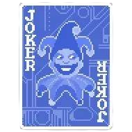
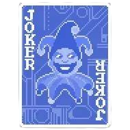

html
looks inside
frieren yippee
This is a paragraph.

 test text
test text
Guess what? (hover over me)
This has lots of lines but now its one woah im making this longer so i can try resizing stuff hell yeahh this better work
This has
lots of lines
and its staying as
lots of lines
woah
KAITO (カイト) is a Japanese VOCALOID developed originally by Yamaha Corporation and distributed by Crypton Future Media, Inc.. He was one of the 4 known "Project Daisy" vocals. His VOCALOID3 update was developed and distributed by Crypton. He was initially released in February 2006 for the first VOCALOID engine. There has since been a second installment developed for the VOCALOID3 engine dubbed KAITO V3. His voice is provided by the famous Japanese singer, Naoto Fūga (風雅なおと).
 KAITO page

KAITO page
